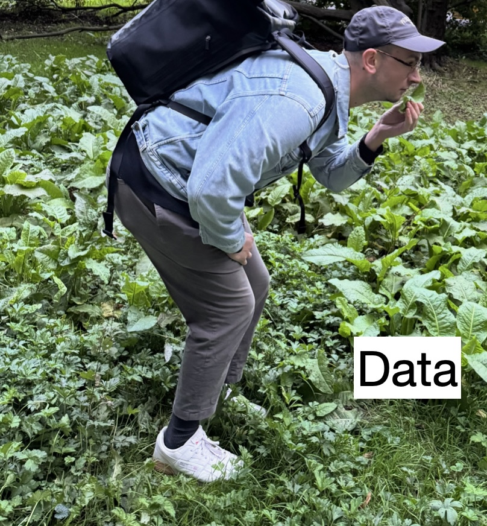

Welcome
This is a Quarto website for the “Forschungsseminar CSS” course at Leipzig University. It covers different techniques for the aspiring computational social scientist, hence I have dubbed it “Toolbox CSS.” You can reach me anytime at felix.lennert@uni-leipzig.de. If you’re interested in my academic work, you can visit my website.

Here’s the official description:
The Forschungsseminar in Computational Social Science (CSS) equips you with the tools to analyze human behavior, predict social trends, and tackle complex societal issues using cutting-edge data science techniques. From web scraping to AI-powered text analysis, you’ll learn to use your computer in new ways to gain insights into social phenomena.
The curriculum covers a range of topics including data management, web scraping, speech-to-text, and computational text analysis. Students will hone their R and develop skills in Python, applying these languages to real-world social science problems. The course progresses from fundamental concepts to advanced techniques, including the use of state-of-the-art AI models for text analysis.
The course structure consists of one lecture and one lab session per week, providing a balance of theoretical knowledge and practical application. Throughout the semester, students will benefit from hands-on coding exercises, one-on-one mentoring, and collaborative projects. The course culminates in a research paper, allowing students to apply their new skills to a topic of their choice.
Course Structure
The course consists of lectures introducing each week’s content and a course script that provides hands-on coding examples for the content. It is mostly containing R with some Python mixed in for good measure when no great R alternatives exist (e.g., for web scraping with Selenium, text classification with transformer models).
At the beginning of the course, students are encouraged to form groups based on research interests and general vibes. I require each student group to check in with me at the beginning of each week to report their progress (even if there’s nothing to report – no progress, no problem). This does not count towards any grade but rather serves the purpose of me receiving feedback on the learning experience (this is a new course!) – and will hopefully help me with providing more appropriate guidance.
Here’s an overview of the topics covered:
| WEEK | TITLE | CONTENT | INFORMAL TITLE |
|---|---|---|---|
| 1 | Kick Off | Housekeeping; Setting up workstation; R recap | Whatever you want to know about CSS |
| 2 | Brief Intro to Python & Regexes | Python basics (reticulate, data types, loops, functions, pandas); Regular expressions with stringr |
REGEXES – tame your data |
| 3 | Data Acquisition I | How the web is written and ethics; rvest web scraping |
stealing data from websites without them noticing it |
| 4 | Data Acquisition II | Dynamic pages and forms with selenium; APIs with httr2 |
stealing MORE data from websites |
| 5 | Data Acquisition III | Intro to OCR with tesseract and transcription (OpenAI Whisper) |
making the computer your transcription servant |
| 6 | Data Acquisition IV | Buffer sessions ; Project discussion | Questions? |
| 7 | Student Project Week | Work on projects in class | time to get your hands dirty |
| 8 | Text as Data I | Bag of words; Sentiment analysis, TF-IDF, NER/POS | basic text analysis |
| 9 | Text as Data II | Supervised machine learning in theory and practice | advanced text analysis with training data |
| 10 | Text as Data III | Unsupervised ML (topic modeling); Remote counseling pre-Christmas | finding patterns without labels |
| 11 | Text as Data IV | Measuring similarity and distributional hypothesis; Word embeddings | cutting-edge text analysis with vector spaces |
| 12 | Text as Data V | Supervised learning on steroids (BERT); Active learning with BERT | holy shit…transformer models |
| 13 | Text as Data VI | LLMs for information extraction; Local LLMs primer | unleashing the power of large language models |
| 14 | Presentation Preparation Week | Work on presentations (deadline Jan 30, 6PM) | polish your masterpiece |
| 15 | Presentations & Wrap Up | Peer-reviewed presentations; Course wrap-up | show off your work |
Syllabus
Please click here to download the latest version of the syllabus.
Alternatively, read it here (probably not the best if you’re visiting this page on a mobile device):